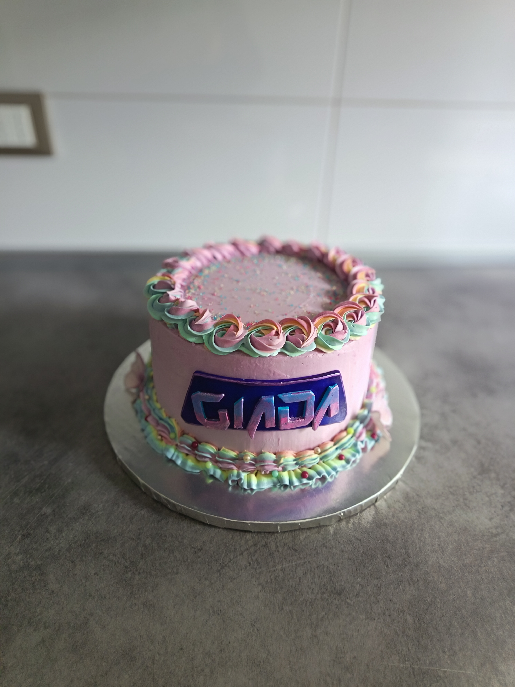
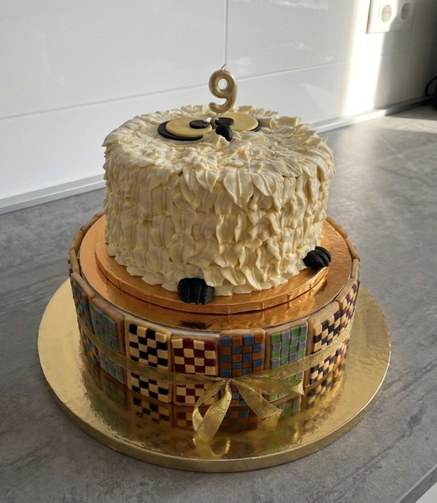

Il mio punto di partenza è l'equilibrio interno: la struttura, gli strati, la farcitura. La decorazione viene pensata per soddisfare l'occhio ma anche il palato, mantenendo una perfetta armonia con i sapori e le consistenze del dolce.

Che si tratti di un'occasione intima o di una grande cerimonia, definiamo insieme il tema e il numero reale di ospiti per studiare altezze, strati e farciture ideali.
Per scelta non realizzo coperture integrali in pasta di zucchero né stampe — solo qualche dettaglio modellato a mano quando serve davvero. Preferisco creare per ciascun progetto una decorazione unica e sartoriale, lavorata a sac à poche o arricchita con frutta fresca di stagione.

I nostri accostamenti e le farciture cambiano con le stagioni per garantire sempre ingredienti freschi e di massima qualità. Scrivici per ricevere la nostra Flavour Card aggiornata direttamente su WhatsApp!
richiedi la Flavour Card su WhatsApp